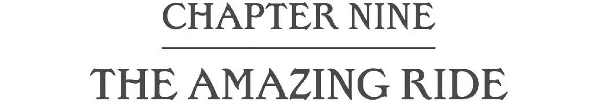
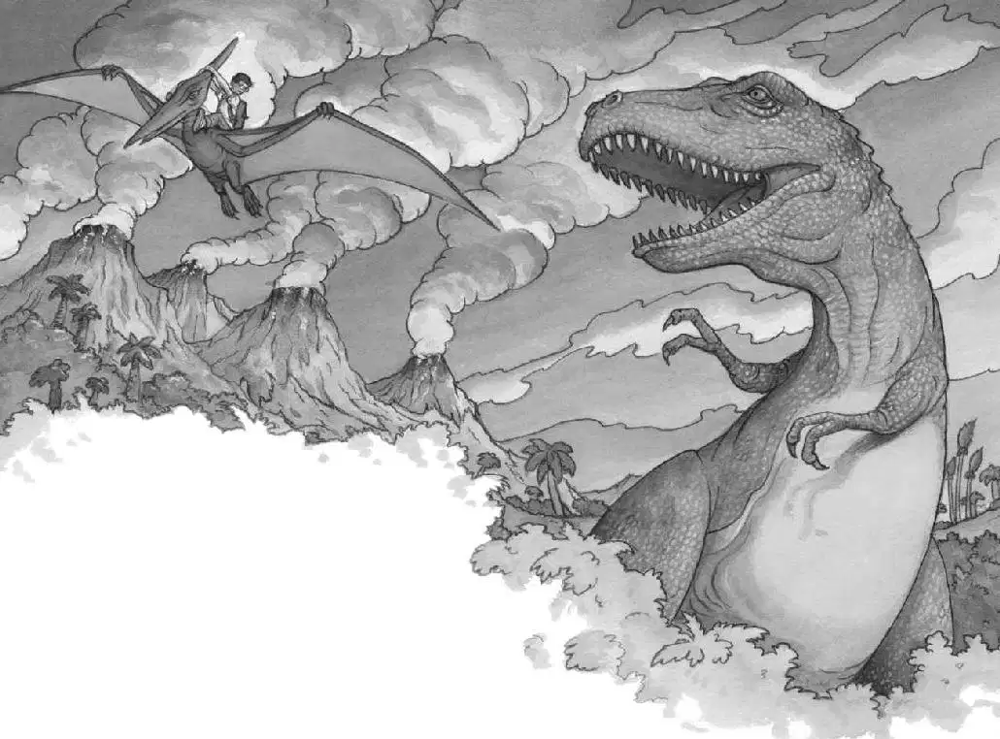

The Pteranodon coasted down to the ground.
He stared at Jack with his bright, alert eyes.
What was Jack supposed to do? Climb on? But I’m too heavy, thought Jack.
Jack looked at the Tyrannosaurus. It was starting up the hill. Its giant teeth were flashing in the sunlight.
Okay, thought Jack. Don’t think! Just do it!
Jack put his book in his pack. Then he climbed onto the Pteranodon’s back. He held on tightly.
The creature moved forward. He spread his wings—and lifted off the ground!
Jack nearly fell off as they teetered this way and that.
The Pteranodon steadied himself and rose into the sky.
Jack looked down. The Tyrannosaurus was staring up at him and chomping the air.
The Pteranodon glided away.
He sailed over the hilltop and over the valley.
He circled above all the duck-billed dinosaurs and all the nests filled with babies.
Then the Pteranodon soared out over the plain—over the Triceratops, who was grazing in the high grass.
Jack felt like a bird. The wind was rushing through his hair. The air smelled sweet and fresh.

Jack whooped and laughed. He couldn’t believe it! He was riding on the back of an ancient flying reptile!
The Pteranodon sailed over the stream and over the ferns and bushes. Then he carried Jack down to the base of the oak tree.
When they came to a stop, Jack slid off the creature’s back and landed on the ground.
The Pteranodon took off again and glided into the sky.
“Bye, Henry!” called Jack.
“Jack! Are you okay?” Annie shouted from the tree house.
Jack pushed his glasses into place. He kept staring at the Pteranodon.
“Jack!” Annie called.
Jack looked up at Annie. He smiled.
“Thanks for saving my life,” he said. “That was really fun.”
“Thank Henry, not me!” said Annie. “Come on! Climb up!”
Jack tried to stand. His legs were wobbly. He felt a bit dizzy.
“Hurry!” shouted Annie. “It’s coming!”
Jack looked around. The Tyrannosaurus was heading straight toward him! Jack bolted to the ladder. He started climbing.
“Hurry! Hurry!” screamed Annie.
Jack reached the top and scrambled into the tree house.
“It’s coming toward the tree!” Annie cried.
The dinosaur slammed against the oak tree. The tree house shook like a leaf in the wind.
Jack and Annie tumbled into the books.
“Make a wish to go home!” cried Annie.
“We need the book! The Pennsylvania book!” said Jack. “Where is it?”
They both searched madly around the tree house.
“Found it!” said Jack.
He grabbed the book and flipped through the pages. He found the photograph of the Frog Creek woods.
Jack pointed to the picture in the book.
“I wish we could go home!” he shouted.
The wind began to blow.
Jack closed his eyes. He held on tightly to Annie.
The tree house started to spin.
It spun faster and faster.
Then everything was still.
Absolutely still.